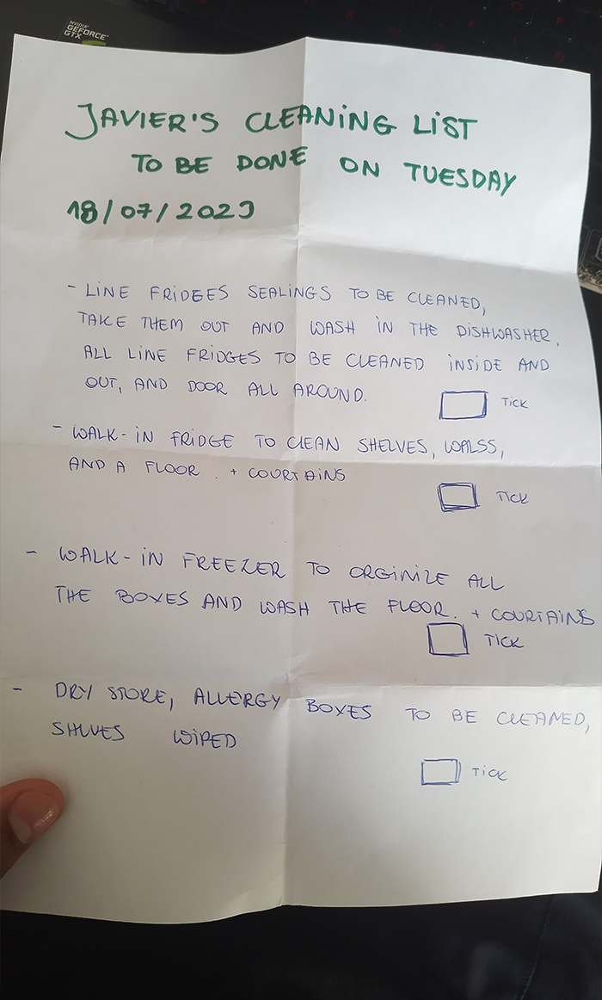
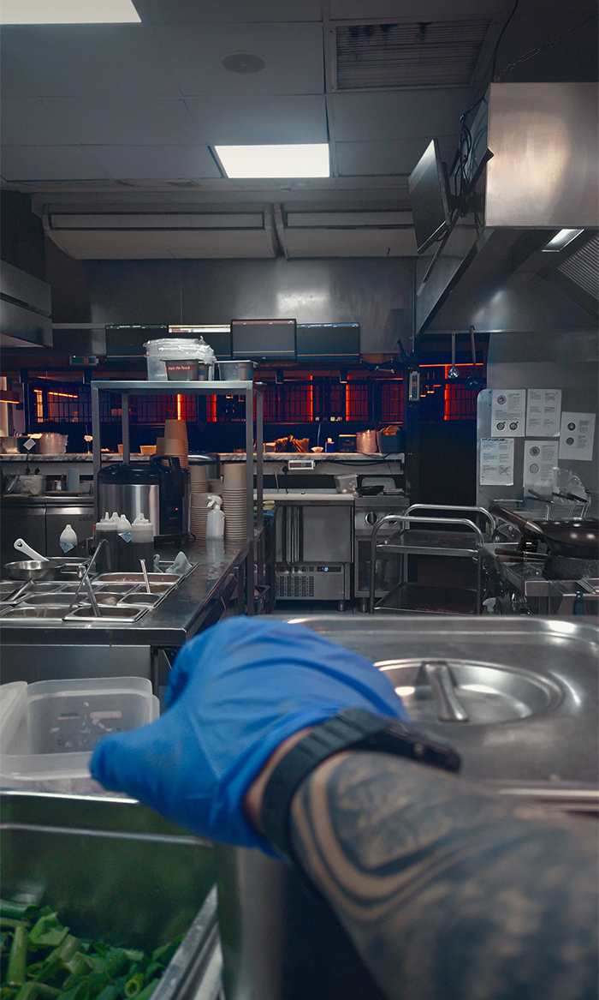

por algo se empieza
solo hasta este año empecé enserio con el inglés y esta vez si me he puesto juicioso con la tarea. he trazado algunas tareas para lograr aprender el idioma, aunque para aprenderlo bien necesitaré más que solo esto.
encurso
conocer nativos en el idioma.
trabajar con navitos.
empezar la escuela.
vivir en el extranjero.
enfocar el inglés a mi carrera.
finalizadas
conocer nativos en el idioma.
trabajar con navitos.
vivir en el extranjero.
para que vean que sí lo he intentado
estas son imágenes random para ustedes, pero con cada letrero, expresión, papel que veo o escucho en mi día a día lo uso para ganar vocabulario, también veo videos y escucho podcast. estos recursos son inputs que me ayudan a entender cada vez más el idioma.

